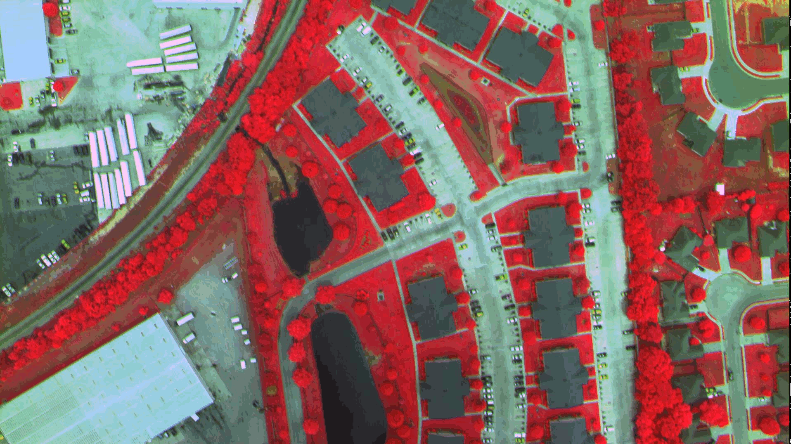
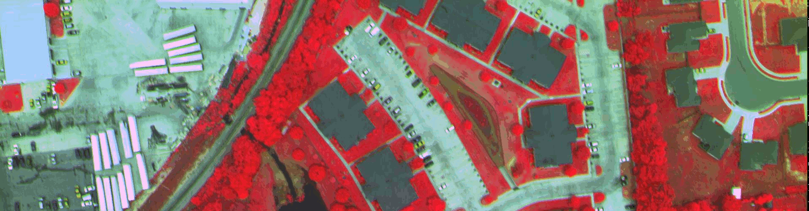
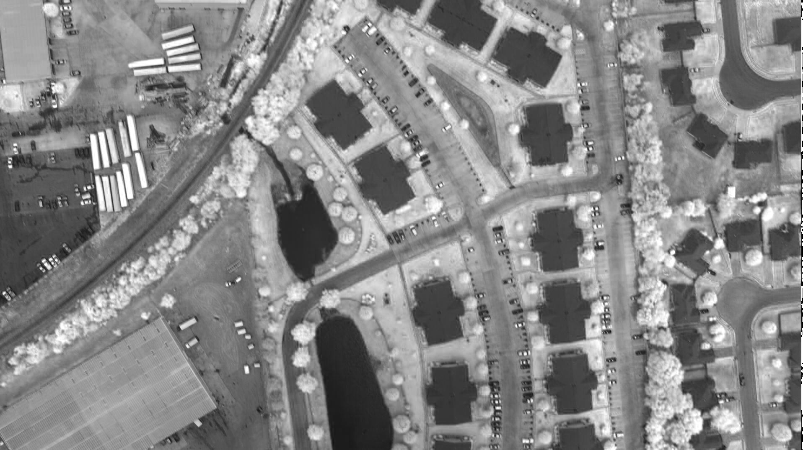

Guide de démarrage rapide avec Rasdaman¶
Rasdaman est un moteur Big Data pour l’analyse ad hoc flexible sur les données multidimensionnelles de capteur spatio-temporel, d’image, de simulation et de statistiques de taille illimitée. Le langage de requête du Service de traitement de la couverture Web (WCPS) est une norme de l’Open Geospatial Consortium (OGC) qui permet le filtrage et le traitement des couvertures raster multidimensionnelles, telles que les données sur les capteurs, la simulation, l’image et les statistiques à l’aide de services Web. Les requêtes WCPS sont traduites en langue de requête rasdaman, rasql, et sont exécutées sur rasdaman. Ce guide de démarrage rapide montre comment accéder et manipuler une couverture 2D par exemple en utilisant le langage WCPS.
Contents
Configuration¶
La première étape avant d’essayer l’une des requêtes suivantes est de commencer rasdaman et Tomcat. Ouvrez l’annuaire Databases sur le bureau, puis Start Rasdaman Server. Prévoyez deux à trois minutes pour rasdaman et surtout Tomcat pour démarrer complètement (une fois que le client web rasdaman est chargé dans le navigateur).
Ensuite, vous pouvez ouvrir Rasdaman-Earthlook Demo à partir du même répertoire, qui lancera un démonstrateur local dans le navigateur. Pour un tutoriel plus pratique, continuez avec les prochains exemples ici.
Exécution des requêtes WCPS¶
- Soit :
- Allez sur le client web rasdaman, passez à l’onglet ProcessCoverages et entrez votre requête dans les cases de requête et appuyez sur envoyer.
- Ajoutez votre requête dans cette url : utilisez http://localhost:8080/rasdaman/ows?query=your_query à exécuter à l’aide d’un navigateur.
Lancer la couverture¶
L’exemple de couverture qui sera utilisé ultérieurement est une image de 6 Mo comme ci-dessous:
{kind=link}
Accéder à la couverture complète¶
La requête WCPS pour accéder à la couverture complète est la suivante :
for c in (NIR) return encode(c, "png")
Cliquez sur coverage request pour l’exécuter dans le navigateur.
Sélectionner un sous-ensemble de la couverture¶
La requête WCPS pour accéder à un sous-ensemble de la couverture est la suivante :
for c in (NIR) return encode(c[i(0:500),j(0:500)], "png")
Cliquez sur coverage request pour l’exécuter sur le navigateur.
Le résultat de la requête est une image comme suit :
{kind=link}
Extraction de bande à partir de la couverture¶
La requête WCPS pour accéder à la bande rouge de la couverture est la suivante :
for c in (NIR) return encode(c.red, "png")
Cliquez sur band extraction pour l’exécuter; vous devriez voir l’image suivante dans le navigateur en conséquence:
{kind=link}
Opération arithmétique : Extraction de l’indice NDVI de la couverture¶
Le NDVI (Normalized Difference Vegetation Index) est une mesure de la probabilité de végétation dans la télédétection, c’est-à-dire que plus le pixel est proche de +1, plus il est probable qu’il s’agit de plantes. La requête WCPS pour extraire le NDVI de la couverture est la suivante:
for c in ( NIR ) return
encode(
(unsigned char) (
(((float)c.0 - (float)c.1) /
((float)c.0 + (float)c.1)) > 0
) * 255
, "png" )
{kind=link}
Ensuite ?¶
- Le tutoriel de rasdaman fournit une introduction condensée aux concepts derrière rasdaman, rasql et le support des services Web OGC.
- Pour en savoir plus sur le language Web Coverage Processing Service normalisé par l’OGC (qui a été fortement inspirée par rasdaman); un bon point de départ est la page de documentation et de tutoriels <https://standards.rasdaman.com/>`_et le ` bac à sable de requête WCPS.
- Vous vous intéressez aux données et services de couverture en général? Visitez wiki de l’OGC Coverages Domain Working Group.
- Explorez la documentation de rasdaman pour en savoir plus sur l’administration de rasdaman, son langage de requête, et l’ingestion de données.
- Allez à la démo multidimensionnelle pour explorer les démonstrations intéractives 1-D à 4-D de rasdaman. Les petites ont été intégrées à OSGeoLive, celles qui utilisent de plus grands ensembles (au-delà de la capacité de ce lecteur) vers le site de démonstration des normes OGC .